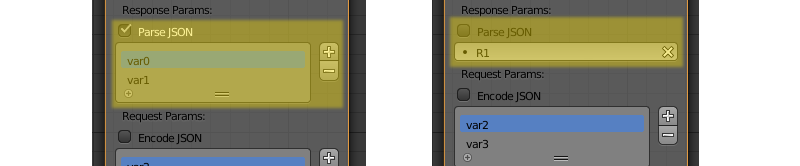

Logic Nodes¶
Table of Content
Basics¶
Visual programming is performed by creating logic node tree in the node editor area in Blender. These nodes can extend the scene functionality significantly without any coding.

To activate logic on the given scene set the Logic Editor property in the Scene tab and append/select active node tree.

To edit logic tree go to the Node Editor area and select the Blend4Web Logic tree type:

Then select the required node tree:

Nodes are created by using standard Blender keyboard shortcut Shift+A.
The nodes themselves are logic blocks that are executed from the Entry Point node which has no inputs and only one output. All other nodes have both inputs and outputs, and can be inserted in any place of a logic tree. The exception is Page Redirect node, which can be inserted only to the end of the node tree. The nodes which have two outputs allow braching, thus the next leave is selected based on condition specified for such nodes.
For implementing complicated logic there are numeric variables called registers. Each of 8 registers can store a single numeric value. The registers can be used for storing some scene state (e.g. this can be a counter of animation playbacks, character’s health points etc).
Logic Editor usage example:

All avalible nodes are described below.
Control Flow¶
Entry Point¶
This is where the script starts. By using multple entry points you can create multi-threaded applications.

Input parameters¶
None.
Output parameters¶
- Next
Next node.
Internal parameters¶
None.
Switch Select¶
Can be used to trace the selection of any object from the object list.

Input parameters¶
- Previous
Previous node.
Output parameters¶
- <object name> Hit
This parameter will pass the control to the next node if the user selects (with a mouse or by touch) an object mentioned in the parameter’s name. The
Switch Selectnode has one such parameter by default, but you can add new ones and remove existing ones (the node can even have no such parameters).- Miss
This parameter will pass the control to the next node if the user hasn’t selected any of the objects specified in the
Switch Selectnode.
Internal parameters¶
- Object
One of the objects that the user can select. These parameters are automatically created and deleted when you create or delete a
Hitparameter. The number of such parameters is always equal to the number of theHitparameters.
Delay¶
Make a delay before going to the next node.

Input parameters¶
- Previous
Previous node.
Output parameters¶
- Next
Next node.
Internal parameters¶
- Value
Time (in seconds) that will pass before the activation of the next node. Set to zero by default. Can be set manually or through a register (if the
Variableparameter is enabled).
Conditional Jump¶
Go to the specified node if the certain condition is met. The parameters (operands) can also be registers that are activated using the corresponding switches.

Input parameters¶
- Previous
Previous node.
Output parameters¶
- True
Condition is true.
- False
Condition is false.
Internal parameters¶
- Condition
Logical condition. Can have one of the following types:
Equal - first operand is equal to the second.
Not Equal - frist operand is not equal to the second.
Less Than - first operand is less than the second.
Greater Than - first operan is greater than the second.
Less Than Or Equal - first operand is less than or equal to the second.
Greater Than Or Equal - first operand is greater than or equal to the second.
- Operand1
First operand of the logical condition. Should have a numeric value. Can be specified in the node or can be a link to one of the eight registers.
- Operand2
Second operand of the logical condition. Works the same way as the first.
Select (Deprecated)¶
Note
Deprecated! Isn’t recommended to use. Instead, using a Switch Select node is recommended.
It is similar to the Select & Play node, except the transition happens instead of animation. This function allows to implement a complicated logic because in this case there is a possibility to identify the user selection results.
Select & Play Timeline (Deprecated)¶
Note
Deprecated! Isn’t recommended to use. Instead, using a combination of Switch Select and Play Timeline nodes is recommended.
Wait until the user selects an object (on desktops - with a mouse click, on mobile devices - with a touch). If the object, which is specified in this node, is selected - then start the animation similar to the Play Timeline node. If any other object is selected - then immediately transfer control to the next node.
Select & Play Animation (Deprecated)¶
Note
Deprecated! Isn’t recommended to use. Instead, using a combination of Switch Select and Play Timeline nodes is recommended.
Wait until the user selects an object (on desktops - with a mouse click, on mobile devices - with a touch). If the object, which is specified in this node, is selected - then start the animation similar to the Play Animation node. If any other object is selected - then immediately transfer control to the next node.
Animation¶
Play Timeline and Stop Timeline¶
Can be used to control NLA animations. The Play Timeline node plays NLA fragment starting with a frame specified by the marker. Animation plays until next marker is encounterd, or to the end of the scene’s timeline. After that, control passes on to the next node. The Stop Timeline node stops the playback.

Input parameters¶
- Previous
Previous node.
Output parameters¶
- Next
Next node.
Internal parameters¶
- Start Marker
First frame of the animation. If not specified, an animation plays from the start of the timeline and may not work correctly.
- End Marker
Last frame of the animation. If not specified, an animation plays to the end of the timeline and may not work correctly.
Play Animation¶
Can be used to play object’s animation. An animation can be one of the following types:
Regular Action:

Shader Action:

Particle system:

Input parameters¶
- Previous
Previous node.
Output parameters¶
- Next
Next node.
Internal parameters¶
- Object
Name of the object, animation of which will be played.
- Anim. Name
Name of an animation to play. If not specified, the entire timeline will be played.
- Behavior
Specifies animation behavior. Can have one of the following values:
Finish Stop - animation will be played once.
Finish Reset - animation will be played once, then the object will return to the starting point.
Loop - animation will be playing repeatedly until it is stopped by the
Stop Animationnode.
- Do Not Wait
If this parameter is enabled, the
Play Animationnode will pass the control to the next node on starting the animation playback. If it isn’t, the control will be passed to the next node only after playback is finished.
Camera¶
Move Camera¶
Can be used to move the camera, including smooth interpolation of its position.

Input parameters¶
- Previous
Previous node.
Output parameters¶
- Next
Next node.
Internal parameters¶
- Camera
A camera that will be moved.
- Location
An object to which the camera will move. The camera’s coordinates will be the same as the object’s after the movement is finished.
- Target
The camera will point in the direction of this object after being moved.
- Duration
Time (in seconds) that the camera will spend being moved to a new location. Set to zero by default (and in this case the camera doesn’t actually move, it simply changes its position). It can be specified manually or as a link to a register (if the
Variableparameter is enabled)
Object¶
Show Object¶
Can be used to show 3D objects.

Input parameters¶
- Previous
Previous node.
Output parameters¶
- Next
Next node.
Internal parameters¶
- Object
An object to show.
Hide Object¶
Can be used to hide 3d objects.

Input parameters¶
- Previous
Previous node.
Output parameters¶
- Next
Next node.
Internal parameters¶
- Object
An object to hide.
Transform Object¶
Can be used to transform object’s location, size and rotation angles.

Input parameters¶
- Previous
Previous node.
Output parameters¶
- Next
Next node.
Internal parameters¶
- Object
An object that needs to be translated.
- Relative
If this parameter is enabled, the transformation will be relative, if it isn’t, it will be absolute.
- Location
How the object will move along the
X,YandZaxes. By default, all three parameters are set to zero. Values can be specified in the node itself or through the regisers (if theVariableoption is enabled).- Rotation
Object’s rotation around the
X,YandZaxes. All three valueas are set to zero by default. Can be specified directly in the node or through the registers (if theVariableoption is enabled).- Scale
Object’s size. Can be specified directly or through a register (if the
Variableparameter is enabled). Set to zero by default.- Duration
Time (in seconds) that the transformation will take. It can be specified both directly or with a register (to do this, the
Variableparameter should be enabled). Set to zero by default.
Move To¶
Can be used to move objects.

Input parameters¶
- Previous
Previous node.
Output parameters¶
- Next
Next node.
Internal parameters¶
- Object
An object that you need to move.
- Destination
A target (another object or a light source, camera or anything else) to which the selected object will move. The object’s coordinated will be the same as the target’s after the movement is finished.
- Duration
Time (in seconds) that the object will spend moving to the new location. By default, this parameter is set to zero (and in this case, the object doesn’t actually move, it just changes it’s position in a moment). It can be set manually or with a register (avalible only if the
Variableparameter is enabled).
Apply Shape Key¶
Set the Shape Key factor.

Input parameters¶
- Previous
Previous node.
Output parameters¶
- Next
Next node.
Internal parameters¶
- Object
An object that needs to be transformed.
- Shape Key
Shape key that will be applied to the object.
- Value
How much the shape key will influence the object. This value can be set in the node or in a register. The value should be between 0 and 1.
Outline¶
Controls object outlining effect.

Input parameters¶
- Previous
Previous node.
Output parameters¶
- Next
Next node.
Internal parameters¶
- Object
Any changes of the outline effect will be applied only to an object specified by this parameter.
- Operation
Specifies an operation that will be done to the object’s outline. This parameter can have one of the following values:
PLAY enables outline animation
STOP disables it
INTENSITY can be used to set intensity of the object’s outline
- Intensity
Outline intensity. This parameter is only avalible if the
Operationparameter is set toINTENSITY. The value can be set manually or via register (if theVariableparameter is enabled).
Set Shader Node Param¶
Can be used to set the value for the shader node. Currently, only Value and RGB nodes are supported.

Input parameters¶
- Previous
Previous node.
Output parameters¶
- Next
Next node.
Internal parameters¶
- Object
An object that has material that needs to be edited.
- Material
Material that needs to be edited. It should use nodes.
- Node
A node that has parameters that can be changed. For now, only
ValueandRGBnodes are supported.- Parameters
Editable parameters of the selected node. They can be set in the node itself or through the registers (if the
Variableparameter is enabled).
Inherit Material¶
Copy attributes from one material to another.

Input parameters¶
- Previous
Previous node.
Output parameters¶
- Next
Next node.
Internal parameters¶
- Source
An object that has a material that will be inherited.
- Material
The material to inherit.
- Destination
An object that will inherit selected material.
- Material
The material that will be replaced by the inherited one.
Operations¶
Variable Store¶
Saves numerical or string value to a variable.

Input parameters¶
- Previous
Previous node.
Output parameters¶
- Next
Next node.
Internal parameters¶
- Var. name.
Name of the variable. Can be selected from the list of eight registers or specified manually (if the
New variableparameter is enabled).- Var. type
Variable’s type. This parameter can have one of two values:
Number(for numerical variables) andString(for string variables).- New Variable
If this parameter is enabled, you can manually input a variable’s name and not just select one of the registers. This can be used to transfer the data between the application and the server.
- Num./Str.
Numeric or string (depending on the
VAr. typeparameter value) value of the variable.
Math Operation¶
Perform a math operation and save the result in the register. Any of parameters (operands) can be either a numeric value or a register.

Input parameters¶
- Previous
Previous node.
Output parameters¶
- Next
Next node.
Internal parameters¶
- Operation
Mathematical operation. Can have one of the following types:
Random generates random value greater than the first operand and less than the second.
Add sums the operands.
Multiply multyplies the operands.
Subtract subtracts the second operand from the first.
Divide divides first operand by the second.
- Operand1
First operand. It can be specified in the node or it can be a link to one of the registers (if the
Variableparameter is enabled).- Operand2
Second operand. Works the same way as the first.
- Destination
The result of the operation will be saved in the register specified by this parameter.
String Operation¶
Can be used to perform an operation with two strings and save the result to a register.

Input parameters¶
- Previous
Previous node.
Output parameters¶
- Next
Next node.
Internal parameters¶
- Operation
An operation that you need to perform with two strings, which can have one of the following values:
Join joins two strings into one.
Find writes the index of the first occurence of the second string in the first string to the register. If there is no occurences, the value of -1 will be written. It should be noted that the first symbol of a string has an index of 0, not 1.
Replace replaces first occurence of the second string in the first string with the third one.
Split splits the first string in two using the first occurence of the second string as a splitting mark.
Compare compares two strings. For this operation, you need to specify a logical condition. If this condition is met, a value of 1 will be outputted to the
Destinationregister, if it isn’t, zero will be outputted.
- Condition
A logical condition to compare two strings. This parameter is avalible only if the
Operationparameter is set toCompare. Works the same way as theConditionparameter of theConditional Jumpnode.- Operand1
The first string. Can be specified in the node itself or with a register.
- Operand2
The second string. Works the same way as the first.
- Operand3
This parameter is avalible only if the
Operationparameter is set toReplace. Can be used to specify the third string, which will replace the first occurence of the second one.- Destination
A register to save the operation’s result.
- Destination2
This parameter is avalible only if the
Operationparameter is set toSplit. Specifies the register to save the second half of the string that has been split (the first half will be saved to the register specified by theDestinationparameter).
Sound¶
Play Sound¶
Can be used to play speaker’s sound.

Input parameters¶
- Previous
Previous node.
Output parameters¶
- Next
Next node.
Internal parameters¶
- Speaker
A speaker that will be enabled.
- Do Not Wait
If this parameter is enabled, the control will pass to the next node right after sound playback starts. If it isn’t enabled, the control will pass only when the playback is finished.

Network¶
Send Request¶
Send an HTTP GET request to the specified URL and save the respond’s fields to variables.

Input parameters¶
- Previous
Previous node.
Output parameters¶
- Next
Next node.
Internal parameters¶
- Method
Method of the request. Can have one of two values:
GET is used to request data from the server.
POST is used to send data to the server.
Set to
GETby default.- Url
A web adress to send request to. Set to “https://www.blend4web.com” by default.
- Content-Type
Indicates the media type of the message content. Consists of a type and a subtype, for example:
text/plain. Set toAutoby default. Can be used to reassign the title of the HTTP request.- Parse JSON
If this parameter is enabled, the data recieved from the server will be saved to a number of variables specified by the
Response Paramsparameter. If it isn’t, the data will be saved to the register specified by the same parameter. Enabled by default.- Response Params
If
Parse JSONparameter is enabled, the list of variables to store the data recieved from the server is specified here. Variables always have names likevar0,var1and so on (parameters recieved from the server should have the exact same names), while their quantity can be customized.If
Parse JSONparameter is disabled, theResponse Paramsparameter specifies the register to save the data recieved from the server.
{kind=link}
Note
The data recieved from the server should look like this:
{"var0": 1,
"var1": 10,
"var2": 144,
...
}
- Encode JSON
Encode the data that will be sent to the server. This parameter is avalible only if the
Methodparameter is set toPOSTand is enabled by default.- Request Params
A list of variables that will be sent to the server. Like in the
Response Paramsparameter, the variables always have names likevar0,var1and so on, and their quantity can be adjusted. This parameter is avalible only if theMethodparameter is set toPOST.
Page Param¶
Allows to store any web page parameter in a given register.

Input parameters¶
- Previous
Previous node.
Output parameters¶
- Next
Next node.
Internal parameters¶
- Param Name
The name of the web page parameter.
- Destination
A register that will be used to save the parameter.
Page Redirect¶
Can be used to redirect the browser to another page. This node always marks the end of the node tree and doest’t have any output parameters.

Input parameters¶
- Previous
Previous node.
Output parameters¶
None.
Internal parameters¶
- Url
Web adress of a page that will be opened. Set to “https://www.blend4web.com” by default.
Debug¶
Console Print¶
This node prints variables’s values and additional text to the web browser console. It can be used for debug purposes.

Input parameters¶
- Previous
Previous node.
Output parameters¶
- Next
Next node.
Internal parameters¶
- Message
A message that will be printed to the console along with the values.
- <register name>
A register that will be printed to the console. By default, a
Console Printnode has one such parameter, but you can add new and delete existing ones (the node might not even have such parameters at all).
Layout¶
Reroute¶
Logic Editor also has Reroute elements, the nodes that don’t do anything aside from passing the control to the next node or to the next Reroute element. Such elements can be used to create cyclic structures or to make the node tree easier to read and understand.

Note
Output parameter can’t be connected to the same node’s input parameter. If you need to do this (to make a cycle, for example), you should use Reroute elements.
Debugging¶
For debugging purposes some nodes inside logic tree can be muted.To do that select the required node and press the M key. Muted nodes are not evaluated and simply pass control to the next ones. If the muted node has two outputs the execution continues from the output with negative result (Miss, False).